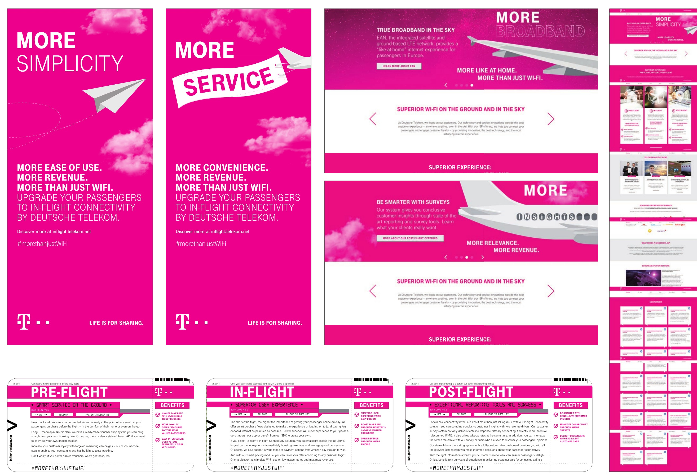
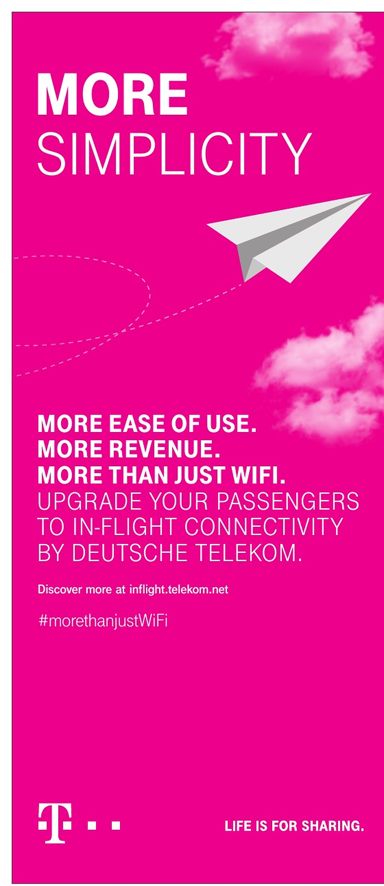
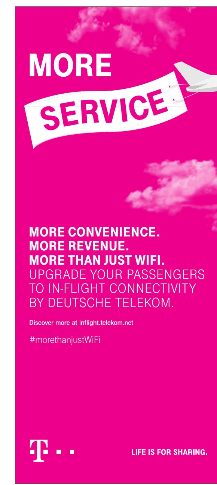
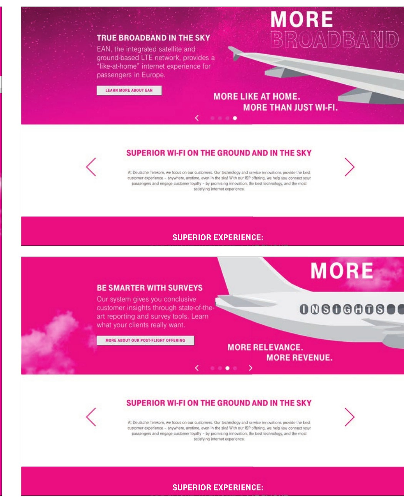
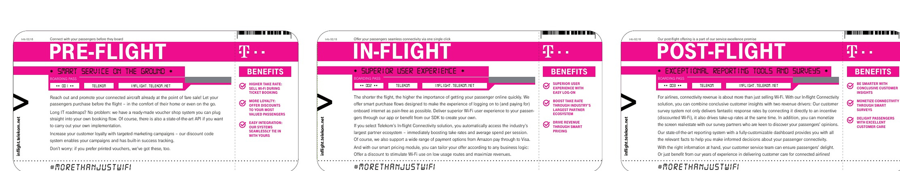

Communication challenge
The offer had to communicate more than connectivity: ease of use, service, passenger experience and revenue potential for airlines — in a format that could work across multiple stages of the customer journey.
Deutsche Telekom
B2B communication for an in-flight connectivity offer — built around a simple “MORE” idea and a modular system spanning the passenger journey.

Communication challenge
The offer had to communicate more than connectivity: ease of use, service, passenger experience and revenue potential for airlines — in a format that could work across multiple stages of the customer journey.
Creative system
Touchpoints
Selected executions from the in-flight connectivity communication.




Next project
Audi↗